6 meses
Este es un pequeño detalle, que me nacio hacerte para poder resumir un poco de los nuestro. Espero te guste, mucho mucho.
 Comenzar
Comenzara imaginar?
Aún recuerdo el día que nos conocimos. Siempre había escuchado que en el lugar donde menos lo esperas te encuentras con las personas que terminan siendo tan importantes en tu vida, y sinceramente contigo fue con quien di por hecho eso. Pues en una cancha de fútbol, bajo el sol (que ese día hacía mucho, jaja), con el outfit menos galán y sin ninguna intención, terminé cruzándome contigo. Desde ahí, con toda la honestidad, te puedo decir que mi vida cambió.
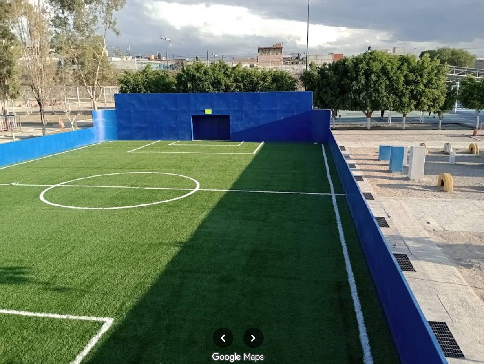
inocente y puro
Poco a poco fuimos platicando, conociéndonos cada vez más o simplemente estando ahí. En esos días, semanas y meses que platicamos, sin darme cuenta me fui acostumbrando a ti, a tu presencia, que aunque no era física (porque casi no nos veíamos, jaja), era y sigue siendo muy significativa para mí. El tener un mensaje tuyo, lo que escribías o decías, lo que me contabas y saber cómo te iba en lo tuyo; mi parte favorita del día era y sigue siendo platicar contigo. Y como dijo una fulanita: "El amor de niños es el más inocente y puro". ¿Quién diría que ese amor de niños se convertiría en lo que es hoy?
¿Cómo no pensarte si estabas en la música?
Como una vez me dijiste, algo que caracteriza nuestra historia es que siempre hay una canción presente. Y es que cómo no hacerlo, si hay muchas canciones que, desde que te conocí, han cobrado sentido. Contigo descubrí muchas nuevas emociones y sentimientos, los cuales sigo sintiendo de la forma más viva hacia ti.
fueron como queriamos
A pesar de que sabíamos que había un sentimiento entre nosotros, las circunstancias no se daban para poder estar juntos; simplemente teníamos una forma diferente de pensar. Aunque teníamos altibajos, al momento de dejar de hablar hasta por meses, siempre terminábamos apareciendo en la vida del otro por alguna u otra razón. Casi no nos veíamos, fue muy poco lo que compartimos y, aun así, estaba ese sentimiento del uno por el otro. Realmente éramos unos perfectos extraños.
reencuentro
Afortunadamente y a pesar de todo, volvimos a coincidir. Y es que no podía sacarte de mi cabeza, no podía evitar buscarte, no podía evitar querer saber de ti. Aunque nosotros ya no estábamos en contacto, yo te tenía presente siempre: cuando escuchaba nuestra música, cuando te mencionaban o cuando pasaba algo que me recordaba a ti. Siendo sincero, no podía dejar que lo nuestro quedara en un "¿Qué hubiera pasado si...?"; tenía que hacer mi último intento para estar con la persona que había estado en mi mente y en mi corazón desde hace un buen tiempo. Aún recuerdo el día que nos volvimos a ver, yo simplemente me dejé llevar y me sentí tan cómodo y seguro contigo, que me di cuenta de que en realidad lo nuestro no podía quedarse así. En ese momento me di cuenta de que has sido tú, "Siempre tú".
Mismos sentimientos
Todo fue de nuevo como la primera vez, como cuando éramos adolescentes, esos sentimientos volvieron a salir a flote contigo. La diferencia es que ahora somos personas adultas, que hemos pasado por otras situaciones y experiencias que nos han hecho ser quienes somos hoy. Ahora sabemos lo que queremos, lo que sentimos y lo que buscamos. No somos personas perfectas, pero cada día hacemos el esfuerzo por mejorar y por hacer sentir bien al otro. De eso se trata una relación: de apoyarnos, de estar juntos en las buenas y en las malas, de hacernos reír, de hacernos sentir especiales, amados, importantes, queridos, valorados y felices. Y a mí me da mucho gusto el poder hacer eso contigo, porque ya lo sabes: solo tú, y "Nadie más".
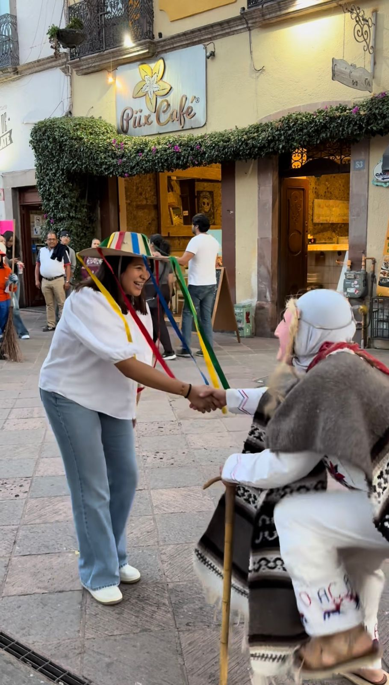
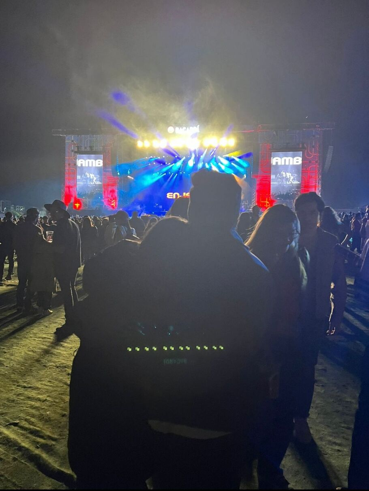
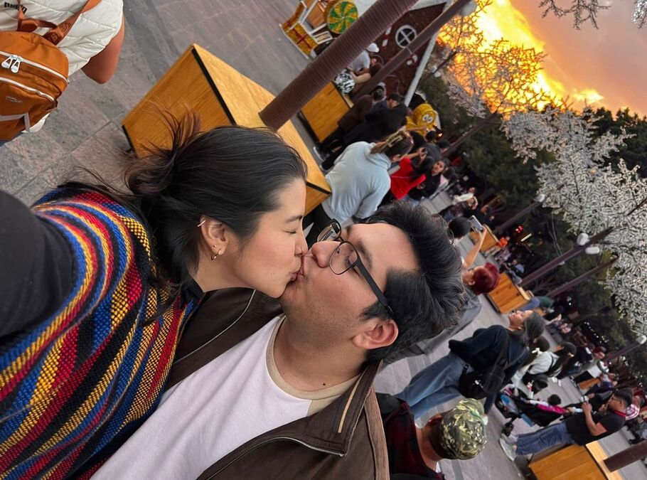
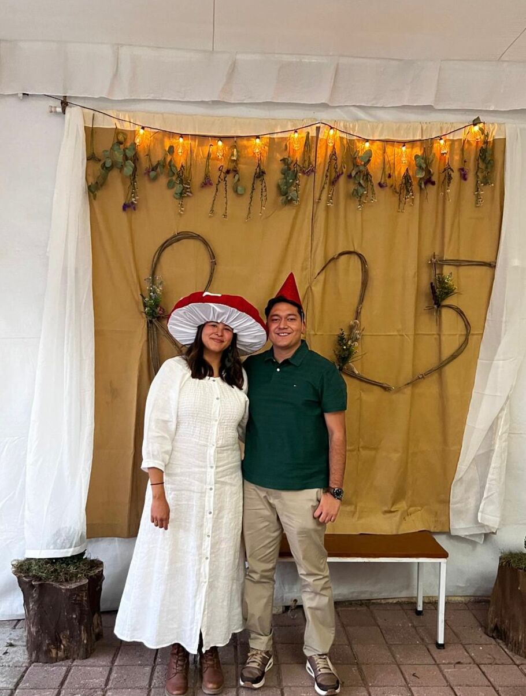
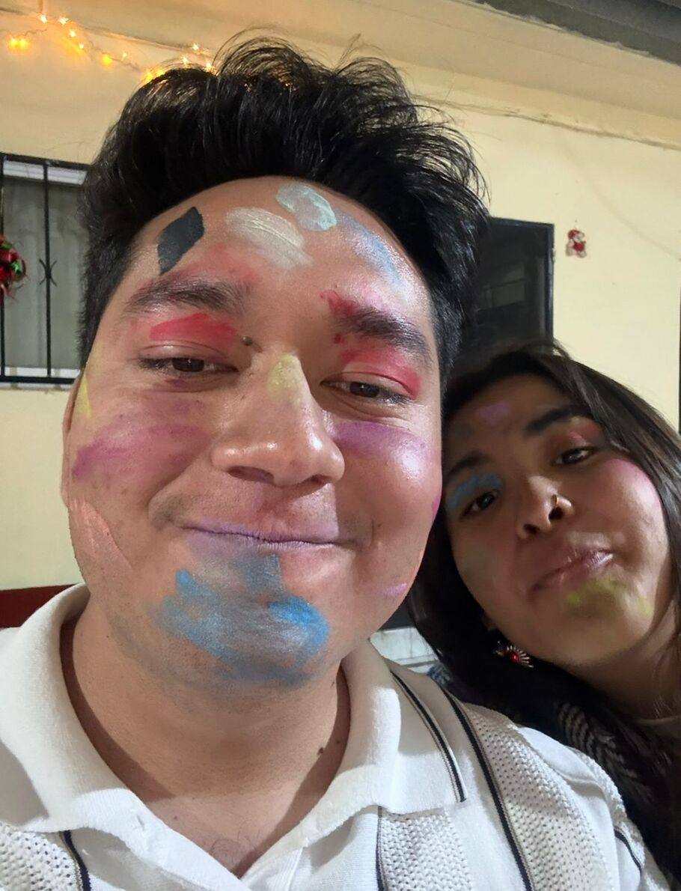
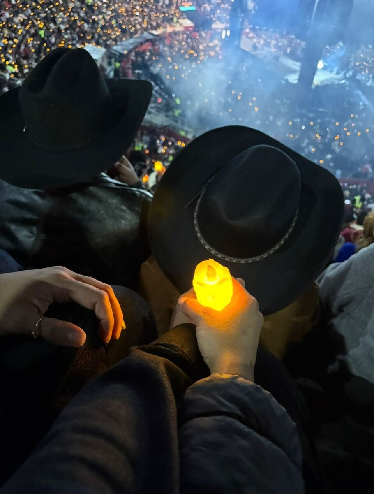
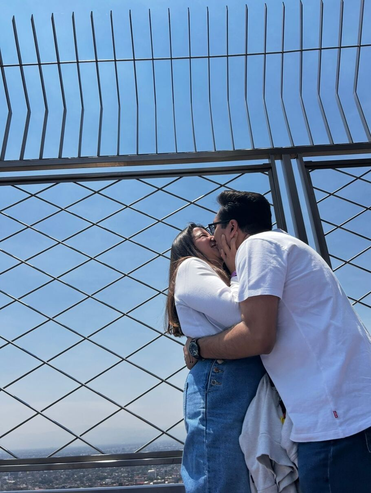
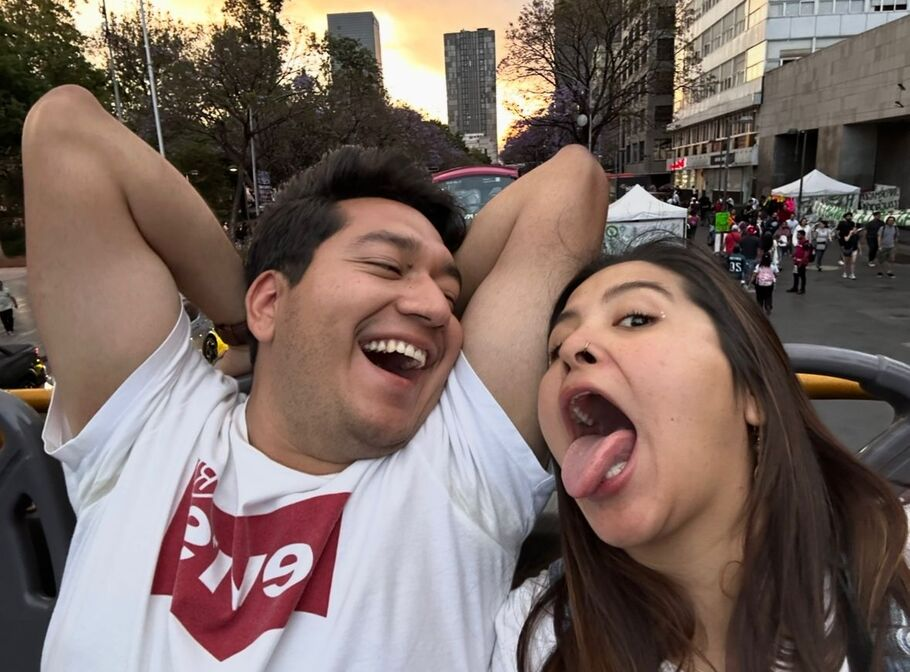
¿Qué sigue?
Esta historia ha sido muy única, muy especial; ha tenido sus altibajos, pero a pesar de
todo hemos salido
adelante. Sabes lo especial que eres para mí y lo que significas. Disfruto demasiado el
estar contigo,
hacer cosas nuevas, hacer planes, compartirnos cada día lo nuestro, estar en nuestros
logros y en
nuestras tristezas. Solo quiero que sepas y que nunca olvides lo que te dije desde el
inicio: "Pondré
todo de mi parte para que lo nuestro funcione". Todos los días haré mi mayor esfuerzo
para hacerte
sentir feliz, especial y acompañada, para demostrarte lo que siento por ti. Soy muy
feliz contigo,
Regina, y quiero seguir siéndolo, de eso estoy seguro. No dudes de lo que siento por ti,
no te quiero
para juegos, no te quiero para pasar el tiempo, te quiero para mí; para cuidarte,
protegerte,
respetarte, valorarte, quererte y amarte. Te amo, Regina, y me veo contigo para algo
bien, a futuro; si
Dios, la vida y tú me lo permiten,
podemos ser una buena pareja estable a futuro, ya que los dos hemos cambiado mucho y
seguimos cambiando
para bien. No prometo nada perfecto,
prometo amor, prometo entregarme, prometo darte todo de mí.
Te amo mucho, mucho.
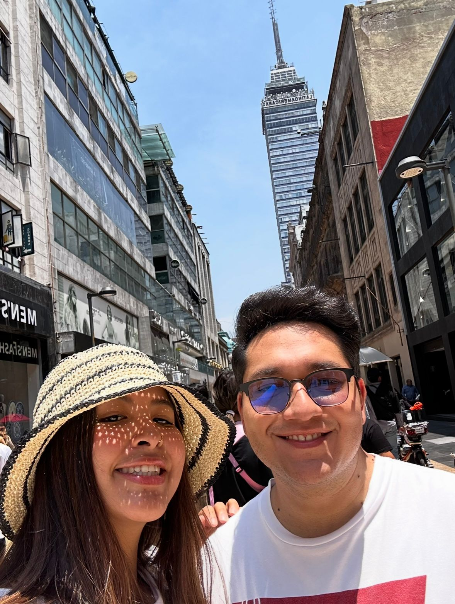
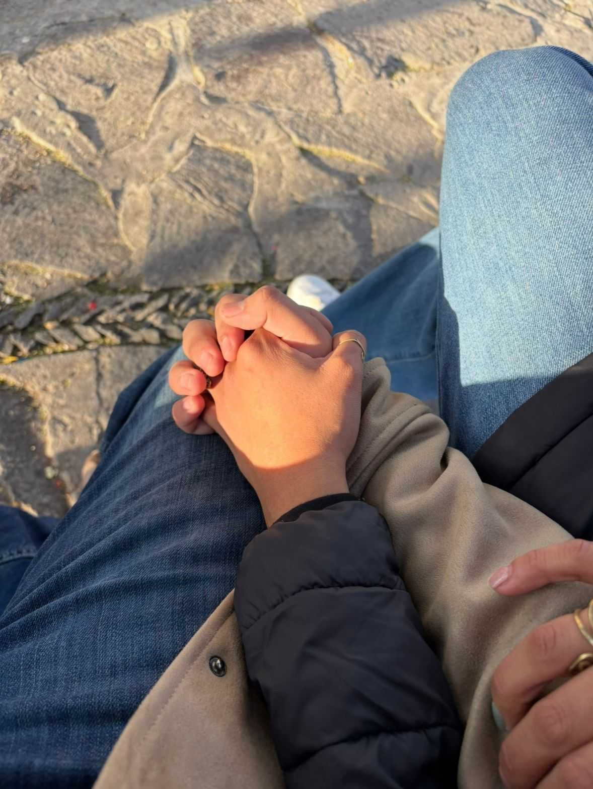